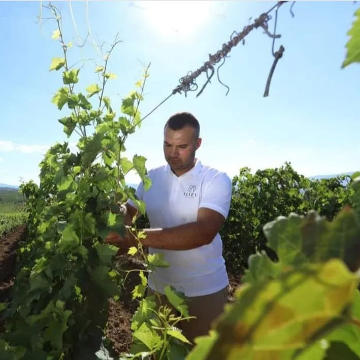

Terra Madre Salone del Gusto 2026
Зад секој вкус стои човек.
Од овоштарниците во Македонија до плоштадите на Торино, Terra Madre Salone del Gusto ги поврзува луѓето што ја создаваат храната со оние што веруваат во нејзината иднина.